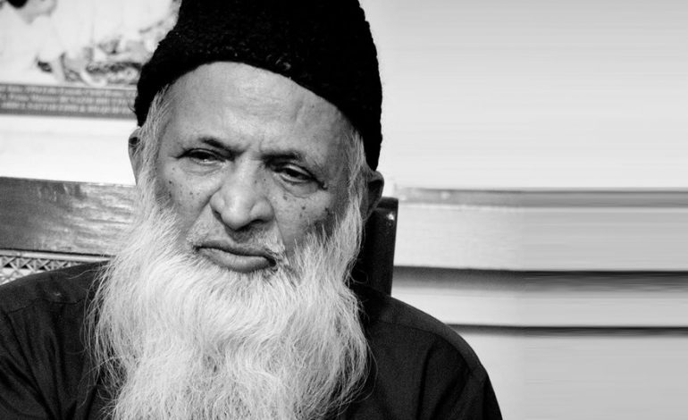

Abdul Sattar Edhi
1928 - 2016
Kind Man of Pakistan
ABDUL SATTAR EDHI was born in 1928 (1928 – 2016) in India, in Bantva, a small village near Joona Gurh, in Gujarat State. In 1947, after partition of the former British colony into two separate independent states, India and Pakistan, Abdul Sattar Edhi’s family, who were Muslims, moved to Pakistan. In 1974 Abdul Sattar Edhi establishes the Edhi Foundation which over the years has become the largest and best organized social welfare system in Pakistan and in the Third World.
Some International Awards
- Ramon Magsaysay Award for Public Service (1986)
- Lenin Peace Prize (1988)
- Paul Harris Fellow from Rotary International (1993)
- Hamdan Award for volunteers in Humanitarian Medical Services (2000), UAE
- International Balzan Prize (2000) for Humanity, Peace and Brotherhood, Italy
- Honorary Doctorate by the University of Bedfordshire (2010)
- London Peace Award (2011), London